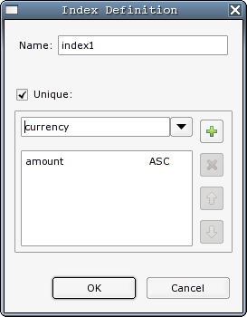

Creating Indexes
Even though Indexes are not database objects as defined by the SQL99
standard, and therefore there is no overriding definition of their
characteristics, RMBench does support
creation of table indexes. It should be noted that the final outcome of
the index definition depends on the database and DDL generator used for
the model.
As usual, an index can be created in 2 ways:
- by clicking on the index symbol () in
the diagram pallette, and subsequently clicking on a table figure in
the diagram
- by clicking on the add button (
 ) in the
Indexes tab of the Table
Details view
) in the
Indexes tab of the Table
Details view
In either case, you will be presented with the index definition
dialog:

In this dialog, you can add the columns from the underlying table that
make up the index. You can also reorder the columns and determine the
sort order for each column. As you may guess, the state of the Unique checkbox determines whether the index will
be unique or not.
Note that creating a unique index
is usually equivalent to creating a UNIQUE constraint, because most
database systems will implicitly create an index for the constraint.
However, unique constraints are covered by the SQL99 standard. You
might therefore consider creating a UNIQUE
constraint instead of an index to make your model more portable